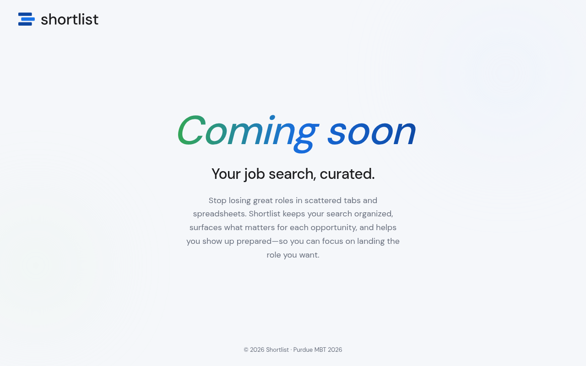

3D Teeth Modelling Software
University of Indianapolis

Masters of Business and Technology Mitch Daniels School of Business, Purdue '26
AI Risk · Cybersecurity Governance · Executive Communication
I fast-tracked from intern to Cybersecurity Analyst at a managed service provider, where I discovered my passion for turning regulatory complexity into organizational confidence. That drive brought me back to Purdue, where I am laser-focused on GRC strategy, AI risk management, and building compliance frameworks that keep businesses secure and resilient as emerging technologies reshape the threat landscape.
CEO

Appointed as CEO of shortlist, a startup built and operated entirely by Purdue Masters of Business & Technology students. shortlist is a job search management platform designed to solve a problem every student knows too well: the open tabs, the missed deadlines, the job you forgot to apply for in time.
Leading a cohort of MBT peers across C-suite, middle management, and individual contributor roles, I oversee product strategy, team direction, and organizational execution. We are building the MVP this summer, with a beta launch planned for fall.
This role sits at exactly the intersection I am passionate about, namely technology strategy, organizational leadership, and bringing a product to life that actually solves a real problem for real users.
Cybersecurity Analyst
Promoted from Specialist to Analyst within two years, I owned security operations across a managed service environment where no two days looked the same. As a Specialist I built the operational foundation, standardising processes, hardening endpoints, and developing the muscle for working across client environments at scale. Promoted to Analyst, I led endpoint detection and response upgrades across three thousand client assets and worked cross-functionally to turn inconsistent incident response methodologies into repeatable, scalable frameworks. Along the way I also mentored incoming talent, which reinforced how much I value bringing others along in the technical space.
Service Intern
This is where it all started. I came in and immediately looked for ways to make operations smarter by designing an automated ticket portal that cut through manual inefficiencies and moved the needle on key performance indicators. I also took on consolidating all standard operating procedures into one organized system, and proactively researched emerging security threats to build a competency matrix that helped the team get ahead of skill gaps before they became problems.
Master of Business and Technology
B.S. Computer Science · Minor in Mathematics
B.S. Computer Engineering
Purdue University · Northern Trust
Cybersecurity In ProgressBuilding an enterprise-grade AI risk governance framework for an organization integrating AI-driven agents across their SDLC. Aligned with NIST AI RMF, the work produces a structured risk taxonomy, a controls-to-SDLC-phase mapping, and policy objectives for responsible AI adoption.
Non-Profit Tech Organization
AI & AutomationWorked with a non-profit tech organization to build a smarter way to connect with students, parents, and employers visiting their site. I led the build of a conversational AI voice agent, engineered prompts to generate five distinct user personas, constrained hallucinations, and handled multilingual edge cases. The agent didn't just answer questions; it delivered personalized action plans via email at the end of every session.
Consulting LLC
AI & AutomationA consulting firm was burning time on tasks that didn't need a human. I designed LLM-driven workflow automation for their junior analyst team, cutting manual effort, freeing capacity, and making a strong enough case that it brought in a new client acquisition. I also built a data-backed service scoring matrix so the firm could prioritize smarter, not just faster.
Non-Profit Organization
CybersecurityRan a full tabletop exercise to stress-test how ready an organization actually was when things went wrong. That meant reviewing hardware and software asset readiness, running a risk analysis across tolerance and transference levels, and delivering an incident response plan that executives could actually act on, not just file away.
DevOps and Tech Solutions | Product Owner
EngineeringTook on the product owner role for a full-stack client website and API build. That meant owning the backlog, defining security requirements and technical scope, and keeping an Agile team moving through CI/CD pipelines to hit delivery milestones. The goal was always the same: ship something secure, on time, and actually aligned to what the client needed.
Purdue University Indianapolis
EngineeringLed a five-person team to design and build a wearable smart ring for detecting obstructive sleep apnea. I owned the physical prototype design and wearable architecture, while we programmed LDF sensors, a PSoC6 microcontroller, and pulse oximeter integration to make the hardware actually talk to each other in real time.
University of Indianapolis
EngineeringBuilt software that ingested raw topographic dental data and rendered it into 3D models of teeth, giving dental researchers a precise tool to measure cusp apexes for molar crown work. Leveraged VPython for scientific visualization, turning a very manual research process into something repeatable and visually intuitive.
Keynote speaker and board-level communicator, translates technical risk into language that executives can act on, not just file away.
Consistently bridges security operations and executive decision-making, across every role, from analyst to CEO, the through-line is alignment.
Leads product strategy, governance design, and organisational direction, from building shortlist's MVP to designing an AI risk framework for a global financial institution.
Converts regulatory complexity into organisational confidence, builds compliance programmes that become scalable frameworks, not one-off documents.
Developed incoming technical talent at Blackink IT and built a competency matrix to proactively close skill gaps before they became operational problems.
MIRA Resilience Award finalist. Consistently takes initiative before anyone has to ask, and keeps going when it gets hard.
I went from designing an automated ticket portal on my first day as a Blackink IT intern to running a startup and building AI risk governance frameworks for a global financial institution, not because I had a plan, but because I've never been able to walk past a problem without trying to fix it. My work lives at the intersection of cybersecurity operations and AI strategy: I've led EDR upgrades across thousands of client assets, standardized incident response programmes from the ground up, and now I'm governing AI agents through entire software development lifecycles aligned with NIST AI RMF. What sets me apart is that I translate, between the technical team and the boardroom, between regulatory complexity and organisational confidence. If you need someone who can build the programme, lead the room, and brief the executives, I'd love to talk.
Download CVUniversity of Indianapolis
Purdue University Indianapolis